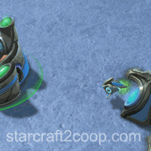
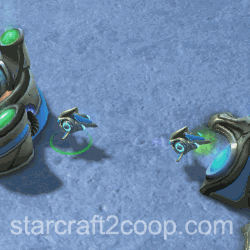

Build Order Theory: How to Develop Your Own Build Orders
Sections on this Page

What is a Build Order
Before you start to develop your own build order, it is first important to understand what a build order is and what its purpose is. A build order provides a player with a set of actions that they should follow at the start of the game. These actions will include things like when to make a worker, or when to put down a building.
The reasoning behind this is that games all start with the same state. Therefore, there is a theoretical set of actions that can be taken such that a particular state of the player's situation is highly optimized. For example, a player can follow an economy-focused build order, and after a certain amount of time, they would have maximized their economic potential, far more than a player not following the build order.
Build orders are extremely precise. They require very particular timings and repetition for practice. Players with excellent macro abilities can benefit a lot from build orders. This is because they float very minimal quantities of resources and play efficiently. For example, Speedrunners can benefit greatly from a good build order due to the repetitive requirement of their gameplay.
However, build order theory can benefit a large number of players interested in learning the intricate details of the game who want to improve their gameplay. Knowing how build orders are generated can allow players to adapt to new situations that may arise in a game. For example, when facing particular Mutators, knowledge of build order theory can come in handy.
Below is an example of a build order. This one is for Nova's opening:
14 Refinery
15 Refinery
18 Commander Center
19 Barracks
22 Marines -> Gas -> Main
The numbers on the left show the supply a particular action is taken at. It is assumed that any unaccounted supply goes into making workers. So, in this scenario, the player would continue making workers until they are at 14 supply. Then they would spend 100 minerals on making an Automated Refinery, etc. On the last line, says at 22 supply, drop marines and use them to break the gas rocks first, before breaking the main rocks.
All build orders follow a similar format. Some may use the more condensed arrow notation, some may be more wordy. However, they all convey the same thing: a set of actions a player should take to optimize their early game.
There are certain limitations to build orders in Co-op. For one, Missions can have varying degrees of how contested an expansion is. For example, expanding on Malwarfare is significantly easier than expanding on Cradle of Death. You will need a signficantly larger army to expand on the latter, which means your build order will have to be different. Listing build orders for every possible scenario is extremely difficult.
What this guide aims to do is give players a rough framework on how to come up with a build order on the spot that addresses their particular needs by providing them with information on how to manage their economy.
Note that all builds were done on Oblivion Express, so timings to move the workers to the expansion may vary depending on the mission.
Spending Resources
In Starcraft II, you can spend resources across three different channels. These are:
- Economy: These are units/structures that further contribute to the enhancement of your economy. These include:
- Primary Structures (Nexus, Command Center, Hatchery)
- Vespene Collection Structures (Assimilator, Refinery, Extractor)
- Workers (Probes, SCVs, Drones)
- Supply Structures/Units (Pylon, Supply Depot, Overlord)
- Queens
- Tech: These are upgrades/structures that progress your in-game technology level. These include:
- Combat unit-producing structures (e.g. Gateways, Barracks)
- Research structures (e.g. Forge, Engineering Bay, Evolution Chamber)
- Attack/Armor/Shield/Unit-specific Upgrades
- Army Units: These are units that will engage in combat.
The goal of a build order is to optimize the spending across these three categories such that:
- You do not lose to any early-game aggression in the form of attack waves.
- You are able to comfortably complete the mission objectives.
- You are in the best possible place economically at a certain point in the game.
Core Concept: Making Workers
Since workers improve your economy, it follows logically that you should be making workers consistently until you reach saturation across both your bases. In fact, this is the core concept behind most (if not all) build orders. By paying attention to your macro to ensure that all your primary structures are producing workers, you can improve your in-game economic state immensely.
However, making workers has a cost associated with it. Consistently making workers without doing anything else can cause two problems:
- It leaves you vulnerable to attack, especially when attack waves arrive early, like on Rifts to Korhal.
- It prevents you from Teching up, weakening your army, and potentially preventing you from expanding.
Therefore, part of the resources you get need to be spend on Teching up, expanding and making an army. Usually, the resources you spend will be your "floating" resources. That is, resources that you do not need to maintain a single worker in production in your primary structure.
Concept #1: Using Calldowns
Calldowns are a unique aspect to Co-op. Calldowns can significantly impact a commander's build order. They can allow commanders to expand much quicker than normal, because most calldowns are free, and players are only sacrificing a cooldown charge for it.
A small note to make here is that players must ask whether using the calldown to fast-expand is worth it, given their in-game situation. Most of the time, the answer is "yes", but players will have to evaluate this for themselves given their situation (for example, custom Mutators).
With that in mind, we can now come up with a reasonably decent Zeratul build. Note that this includes the Legion cost reduction mastery (the Legion will cost 540 minerals to summon), as outlined in the Zeratul page.
19 Probe -> Expo
20 Zoraya Legion
21 Nexus
Gets vision of the Expo
Concept #1
Concept #2: When to Take Gas
As a general rule of thumb, whenever gasses are automated, it is better to take the gasses first using floating resources, before attempting to expand.
Additionally, you also want to ensure that your mineral line does not get over-saturated. More than the maximum number of workers on a mineral line means that you have workers that are doing nothing. It would be much better if they were collecting gas instead. Therefore, under certain conditions, gas collection structures need to be constructed so they can prevent oversaturation of the mineral line.
With that in mind, we can now come up with a reasonably decent Vorazun build. Note that this assumes at least 8 points into the Initial Spear of Adun Energy, to get Shadow Guard out as soon as it comes off cooldown.
13 Dark Pylon
15 Assimilator
16 Assimilator
18 Gateway
19 Pylon
22 Change Rally to Expansion
23 Cybernetics Core
27 Shadowguard -> Gas -> Main
28 Twilight + Warp Gate
29 Assimilators + Nexus
Concept #1
Concept #2
Concept #2
Core Concept
Prevent Supply Block
Main is Saturated
Core Concept
Concept #1/Concept #2
Core Concept
Concept #2
Concept #3: Primary Structure Placement
Terrans have an advantage which allows them to move their structures after construction. This comes in handy for slower Terrans, as it allows them to pre-build their Command Centers near the expansion rocks. During this time, they can tech up, build up a small force of units, and use that force to clear the expansion rocks. In general, if you are playing Terran, it is always better to spend your first floating resources on a Supply Depot (to keep being able to produce workers), and then on a Command Center.
Protoss commanders are not as lucky. The Nexus is solely used for the production of workers, and constructing an additional Nexus, purely for the use of it's Chrono Boost is not recommended. A Protoss commander will have to clear their gas rocks before they put down their Nexus.
With that in mind, we can now come up with a reasonably decent Nova build.
14 Refinery
15 Refinery
18 SCV -> Expo
19 Command Center
20 Barracks
24 Marines -> Gas -> Main
Concept #2
Concept #2
Get SCV into position
Concept #3
Concept #2
Concept #4: Combat Units
As mentioned in the previous section, Protoss commanders do not have the luxury of pre-building their structures and relocating them. Therefore, they will have to resort to the use of their calldowns or army units. For commanders that do not have calldowns that can be used to clear the Expansion, getting army units out as fast as possible with floating resources is vital.
With that in mind, we can now come up with a reasonably decent Artanis build. Note that this includes all mastery points into the Chrono Boost mastery, as outlined in the Artanis page.
Project Power Field
16 Gateway
18 Pylon
19 Assimilator
20 Assimilator
22 Zealot -> Expo
Chrono Gateway
Project Power Field -> Expo
25 Zealot
28 Zealot
33 Nexus
34 Cybernetics Core
Project Power Field
Concept #4
Power requirement
Concept #2
Concept #2
Concept #4
Concept #4
Concept #1
Concept #4
Concept #4
Core Concept
Concept #5: Static Defenses
Static defense can be used to clear an expansion. Terran commanders should particularly consider this as an option, as static defenses can be salvaged. This means a player simply "locks up" some of their resources for a short amount of time before getting them back again. This is particularly useful for commanders that do not have high tech requirements, or those that require the expansion to prop up an expensive production.
With that in mind, we can now come up with a reasonably decent Tychus build.
17 Command Center
18 Refinery
19 Refinery
20 Engineering Bay
22 2x Turrets -> Rocks
Concept #3
Concept #2
Concept #2
Concept #5
Concept #5
Theory: Mining Rates
Each Worker mines roughly 40 resources (minerals or gas) per minute. Let's examine what happens when we assign different numbers of workers to a single patch of resources.
| Workers | Expected Gather Rate | Actual Gather Rate | Efficiency |
|---|---|---|---|
| 1 | 40/min | 40/min | 100% |
| 2 | 80/min | 80/min | 100% |
| 3 | 120/min | 104/min | 87% |
At first glance, this drop-off seems odd. So let's look at what workers do when they harvest a resource. The logic applies to both, minerals and gas, but as workers tend to stack when harvesting minerals, we will examine workers harvesting Vespene, which makes the cause much easier to see.


Notice that there is a Probe that sits idle on the 3-Working Mining (right) for a short period of time. You might guess that mineral patches may have different mining rates, depending on the small variation in distance between them and the Primary Structure, and you'd be correct.
Workers mine at approximately 40 minerals per minute for the first two workers, when none are idle. When the third worker is added, the distance of the patch becomes a factor. The below table gives a rough idea for the mining rate increase provided by last worker.
| Distance | Mining Increase |
|---|---|
| Far | 30 |
| Near | 6 |
This is important because there are two gather rates in the game. An Optimal Gather Rate, where all workers are gathering resources at 100% efficiency, and a Maximum Gather Rate, where workers are gathering resources at the fastest possible rate allowable. The number displayed above your Primary Structure relates to the Maximum Mining Rate. Assigning more workers to the resource patches will not yield gains. That is, it is assigning 3 workers per resource patch. Additionally, the gather efficiencies on saturated (3 worker) resource patches are affected by distance to the Primary Structure. The shorter the distance, the more idle time workers have, and the less efficient their mining.
This knowledge can help players optimize their builds. Players can choose to go only produce workers to reach the Optimal Gather Rate at the start of their build, freeing up resources to tech up, build an army, or expand, before going up to the Maximum Gather Rate. Note that you should always aim to reach full saturation on both your bases. When you reach that saturation will be up to you to decide. The sooner, the better.
One additional note: because mineral patches are at different distances from the primary structure, the Maximum Gather Rate will require a slightly lower number of workers than then three workers per patch. Usually, a 19/21 saturation is enough to reach the Maximum Gather Rate.
Given this information, it is also optimal to transfer workers from a saturated Main base to a freshly-completed Expansion in order to take advantage of the Optimal Gather Rate.
The following video covers Mining Rates in a lot more detail:
On certain maps, Vespene Geysers may require four workers to reach the maximum mining rate. These geysers are:
| Map | Geyser |
|---|---|
| Malwarfare | Player 1 Expansion (Top-left) |
| Miner Evacuation | Player 1 Expansion (Bottom-Left) Player 2 Expansion (Top-Right) |
| Mist Opportunities | Player 2 Expansion (Bottom-Left) |
| Oblivion Express | Player 1 Main (Top-Left) |
| Rifts to Korhal | Player 1 Main (Bottom-Left) |
| Temple of the Past | Player 1 Main (Bottom-Left) Player 1 Expansion (Top-left) Player 2 Expansion (Bottom-Left) Player 2 Expansion (Bottom-Right) |
| Void Launch | Player 1 Expansion (Bottom-Left) Player 2 Expansion (Bottom-Right) |
| Void Thrashing | Player 1 Main (Top-Left) Player 1 Expansion (Bottom-left) Player 2 Expansion (Bottom-Right) |
Breaking Concept #3
Macro Hatcheries
Certain Zerg commanders, such as Kerrigan, rely on "Macro Hatcheries". These are Hatcheries used solely for the production of larva, instead of relying on Queens, which take up supply. As a result, Kerrigan normally requires several Hatcheries to attain maximum production efficiency. Therefore, Kerrigan can get away with putting down an initial Hatchery next to the gas rocks and start semi-long distance mining from that Hatchery. After the rocks are cleared, a third Hatchery is placed, completing Kerrigan's production and economic requirements.
Below is a Kerrigan build order, taking advantage of Optimal Gather Rates and Macro Hatcheries.
14 Overlord
14 Hatchery
19 Extractor
21 Extractor
24 Hatchery
28 Spawning Pool
33 Overlord
Kerrigan -> Rocks
Prevent Supply Block
Break Concept #3
Concept #2
Concept #2
Break Concept #3
Core Concept
Prevent Supply Block
Kerrigan breaks rocks
Accelerated Production
Commanders like Zagara and Abathur have accelerated production. That is, they produce units in large quantities quickly (as is the case for Zagara) or have an accelerated Larva spawn rate (as is the case with Abathur). In these instances, it is better for the player to either forego a macro hatchery entirely (for Abathur) or delay it until the mid-game (Zagara).
Additionally, because they are able to produce units quickly, they are able to saturate their resource harvesting quickly, adding further importance to taking their expansion quickly. As a result, an optimal Zagara build spawns a few zerglings to clear the rocks, before saturation of the main mineral line. Likewise, Abathur builds two Spine Crawlers to clear the rocks before saturation of the main mineral line.
Swann is another commander that breaks Concept #3 too. One would expect Swann to pre-build his Command Center next to the expansion rocks before breaking them, but there are two factors that make this strategy suboptimal:
- Swann has great turrets that can break the rocks quickly
- Swann can assign multiple SCV's to the same structure to construct it faster
Thus, what a Swann player has is access to a turret that can be built quickly to take out the rocks, salvage that turret, and then build a Command Center really quickly. Therefore, Concept #5 takes over, due to this unique set of circumstances, which is reflected in the Swann build order:
14 Supply Depot
16 Factory (4 SCV's)
18 Billy (4 SCV's)
18 Billy (4 SCV's)
21 Command Center (8 SCV's)
Prevent Supply Block
Target main rocks
and salvage one after
Breaking the Core Concept
Given the knowledge of Optimal vs. Maximum gather rates, Karax has a very interesting potential build order. Note that this includes all mastery points into the Initial Spear of Adun Energy mastery, as outlined in the Karax page.
14 Pylon
14 Probe
Probe -> Expo
Orbital Strike -> Expo
15 Nexus
Prevent Supply Block
Go up to 15 Workers
Get vision
20 shots clear rocks
This particular build allows you to put your Nexus down at a blazingly fast 1:04 seconds, and is the fastest possible expand for an uncontested expansion in the game. We'll now look at how to compare build orders to one another.
Testing Build Orders
Given the above Karax build, we would like to test it and see how well it fares, as compared to continuosly making Probes until you float 400 minerals for a Nexus.
The general methodology is to simply go in-game and test it. Execute both build orders perfectly, and see where they get you at a certain amount of time. Make sure to take a full account of structures and extra units created, and adjust your resource values accordingly when doing the comparison.
A cutoff point of between 6:00 and 7:00 is normally chosen for the test, as those are key points in the game: the start of the mid-game. This point in time will transition you into more difficult attack waves and objectives. This time also ensures both Primary Structures have reached saturation. This means that resource gains henceforth will be exactly the same per minute.
For the Karax build above, we'll test it at the 6:30 mark. For simplicity, we won't be building any tech structures, and only enough Pylons to ensure we do not get supply-blocked.
| Build | Nexus Down | Full Saturation | Minerals | Gas |
|---|---|---|---|---|
| Ultra-fast | 1:04 | 5:25 | 6150 | 1788 |
| Normal | 1:39 | 5:35 | 6550 | 1488 |
It is always important to report your saturation time. This is because it means all your income can now be spent on either army or tech units, rather than improving the economy. Additionally, you should always separate mineral and gas collected, as builds may gather the same quantity of resources, but in vastly different ratios.
Testing build orders is a laborious process. Make sure you repeat the exact build multiple times. If you make any mistakes (assigning a worker to the wrong resource, delaying worker production, etc.), you should restart and try again.
Constructing Build Orders
Given all the concepts and theory, we will now construct and fine-tune a build order for Alarak. The methodology will be as follows:
- Expand Method
- Monitor resource counts in a basic build
- Minimize resource float
We can repeat step #3 above until we have tightented the build order so as to have almost no resources floating. We can also use it to see if we should allocate our workers to different resources instead.
Expand Method
As per Concept #1, we want to use calldowns if possible. Alarak has a great calldown for this: his Structure Overcharge. From the Alarak page, we know that the Structure Overcharge will be available at 90 seconds.
The next question is, what structure do we want to use to expand? A Pylon is the obvious go-to choice here, as it is both cheap, and required in the early game. Therefore, you won't be wasting resources on structures you don't need.
Next, we ask the question: "Will this be the first Pylon we construct? Or will this be a new pylon?". The first Pylon we construct will be very early the in game (at roughly 0:25). Sending a probe to construct the Pylon and then wait there (you will need to maintain vision of the expansion) is extremely wasteful. Therefore, we will construct a new pylon and overcharge that.
So we now have a plan. Put down a Pylon near the main. Wait until Structure Overcharge is almost ready. Send a Probe over to the expansion. Put a Pylon down and overcharge it instantly. Once the rocks are clear, put down the Nexus. We now execute this build and monitor our resources (listing the timing we get an extra 50 resources of each type floating).
Monitor resource counts in a basic build
The build we will be executing is this:
14 Pylon
18 Pylon at rocks
Overcharge
20 Nexus
After executing this build perfectly, and monitoring the resource floats, we get a table like this:
| Time | Mineral Float | Gas Float |
|---|---|---|
| 0:37 | 50 | 0 |
| 0:41 | 100 | 0 |
| 0:47 | 150 | 0 |
| 0:54 | 150 | 0 |
| 0:58 | 200 | 0 |
| 1:03 | 250 | 0 |
| 1:09 | 250 | 0 |
| 1:13 | 300 | 0 |
| 1:19 | 300 | 0 |
| 1:24 | 350 | 0 |
| 1:29 | 400 | 0 |
| 1:34 | 300 | 0 |
| 1:40 | 350 | 0 |
| 1:44 | 400 | 0 |
| 1:49 | 400 | 0 |
| 1:55 | 500 | 0 |
| 2:00 | 500 | 0 |
| 2:01 | 100 | 0 |
At the 2-minute mark, a Nexus is put down, leaving a float of 100 minerals.
Minimize Resource Float
We are now in a position to optimize resource float. Remember that we need to "float" 400 minerals by the time the rocks are cleared so we can put down the Nexus. Anything extra is actual resource float. Since we are floating 100 minerals at the end of the build, opting to invest in Tech is not viable. The tech does not help use clear the expansion any faster. So instead, we should opt to invest in economy instead. Therefore, we should build an Assimilator whenever we are able to do so without affecting our Probe production.
We can get the exact timing this happens on: the point in the table where all resource floats are always above the 75 minerals required to build the Assimilator. This occurs at 0:41. From that point, we subtract 75 minerals from all the subsequent rows. We then repeat this process to optimize. Remember that once you reassign workers, you will need to re-run the build and re-collect the resource float values. A full example is shown below:
|
14 Pylon |
14 Pylon |
14 Pylon |
||||||||
| Time | Mineral Float | Gas Float | Time | Mineral Float | Gas Float | Time | Mineral Float | Gas Float | ||
|---|---|---|---|---|---|---|---|---|---|---|
| 0:37 | 50 | 0 | 0:37 | 50 | 0 | 0:37 | 50 | 0 | ||
| 0:41 | 100 | 0 | 0:41 | 25 | 0 | 0:41 | 25 | 0 | ||
| 0:47 | 150 | 0 | 0:47 | 75 | 0 | 0:47 | 75 | 0 | ||
| 0:54 | 150 | 0 | 0:54 | 75 | 0 | 0:54 | 75 | 0 | ||
| 0:58 | 200 | 0 | 0:58 | 125 | 0 | 0:58 | 125 | 0 | ||
| 1:03 | 250 | 0 | 1:03 | 175 | 0 | 1:03 | 175 | 0 | ||
| 1:09 | 250 | 0 | 1:09 | 175 | 0 | 1:09 | 175 | 0 | ||
| 1:13 | 300 | 0 | 1:13 | 225 | 0 | 1:13 | 225 | 0 | ||
| 1:19 | 300 | 0 | 1:19 | 225 | 0 | 1:19 | 225 | 0 | ||
| 1:24 | 350 | 0 | 1:24 | 275 | 0 | 1:24 | 275 | 0 | ||
| 1:29 | 400 | 0 | 1:29 | 325 | 0 | 1:29 | 325 | 0 | ||
| 1:34 | 300 | 0 | 1:34 | 225 | 0 | 1:34 | 225 | 0 | ||
| 1:40 | 350 | 0 | 1:40 | 275 | 0 | 1:40 | 275 | 0 | ||
| 1:44 | 400 | 0 | 1:44 | 325 | 0 | 1:44 | 325 | 0 | ||
| 1:49 | 400 | 0 | 1:49 | 325 | 0 | 1:49 | 325 | 0 | ||
| 1:55 | 450 | 0 | 1:55 | 375 | 0 | 1:55 | 375 | 0 | ||
| 2:00 | 500 | 0 | 2:00 | 425 | 0 | 2:00 | 425 | 0 | ||
| 2:01 | 100 | 0 | 2:01 | 100 | 0 | 2:01 | 25 | 0 | ||
| This is the basic build. Single Pylon to prevent a supply block and another Pylon to overcharge and clear the expansion. | To minimize float before the Expansion is taken, we put down an Assimilator as early as possible. We do not put Probes on that Assimilator, because we still need the minerals to build the Nexus. | After the Nexus comes down, we float 100 more minerals. We can choose to wait to build a Gateway, or strengthen our economy by putting down another Assimilator. Here, an Assimilator is put down. | ||||||||
Closing Notes
The build orders presented and demonstrated on this page work well for maps with an uncontested expansion. That is, there are no enemy forces guarding the expansion. Players will have to modify their builds accordingly to account for any enemy forces at the expansion. The degree to which the build has to be modified depends on the type and quantity of forces present.
It is because of this that following build orders blindly without consideration of why certain actions are taken is not recommended. Players can get a lot more value out of build orders if they understand the core theory behind it - something which this guide aims to do.
At the end of the day, taking an expansion and saturating it as fast as possible will yield the best possible results. How to do that, given a set of circumstances, whether it is a mission or a mutator, is up to the player.
Build orders are mostly tried and tested several times before an optimal build order is achieved. Players are advised to constantly question and attempt to fine-tune their build orders if they wish to arrive at a perfectly optimal build.